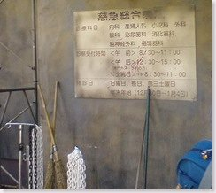
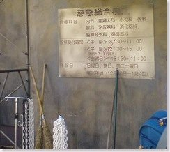

富士急ハイランドに行ってきました！
2009/03/24 1:06:08

いろいろなジェットコースターで有名な富士急ハイランドに友達と一緒に行ってきました。
ジェットコースターを乗る前に、まずは！ってことで
めっちゃ長くて怖いと有名な戦慄迷宮に行ってみました。
 
 ↑かなりリアルな病院ですなぁｗ よくできてる。。。
春の身体検査というのをやっていて途中で分かれ道になっていて
選択札によってコースが変わるみたいです。
怖いかどうかですが・・・
ん・・・？ アレ？おばけいたの？みたいな感じでかなーりスルーですw
途中、あまり仕掛けなしの暗い道を通るところが少し怖かっただけで
むしろ楽しかったです（爆） 怖かったのはどちらかというとこの後のジェットコースターかな･･･
まぁ、最後に「バタン！！！」って大きな音がしておばけが追いかけてくるところで
友達が気づかず、僕が「いや！走れよww！！！」って押したくらいですからw
{kind=link}
そのあとは、水がたくさんかかるジェットコースターに乗って一気に水にかかった後
（↑の写真は近くにあった看板）
日本一高いジェットコースター「FUJIYAMA」逝ってきました～～～！！！
{kind=link}
{kind=link}
↑高所恐怖症（自分）の人は乗ってはいけませんw
一瞬死んだかと思いました･･･ ビルから自殺する人の気分が味わえますw
しかし、待ち時間も２時間あるのでそれも絶叫ですw
ちなみに、ファストパスっぽいのが有料で売っており、時間節約で
購入しておいたので一番早く乗れました。
恐るべし･･･日本一高いジェットコースター･･･
でも、エースコンバットのあの旋回とかこんな感じなんだよねぇ（関係ないか）
次に、日本一早いジェットコースター 「ドドンパ」も行ってきました！
こちらは、どちらかというと楽しいです！あのジェットコースターの上下は２，３回くるくらいで
172km/hの速度の快感が楽しいです！
ちなみに、こちらも待ち時間2時間半･･･
並びましたよえぇ・・・ 乗る前に倒れるかと（ぇ
ちなみに、富士ヤマ レンジャーとなるものがテレビで放送していて（実際は録画）
ダメダメなレンジャーが悪事を働いていて、ジューカイという悪役なキャラがレンジャーを
倒すという逆転現象な番組を見て暇をつぶしてました。
で、室内に入ったらいろいろ名言集が書いてあり、気になる名言が･･･
{kind=link}
↑ちょっｗ 大丈夫なのか！？
確かに・・・ｗ と思ったが、さすがに著作権ギリギリな表現ですなｗ
その後は、乗る時間がなくなってしまい、気がついたら閉園1時間半前
「ええじゃないか」が順番締め切りになってしまい、乗れるものがなくなってしまったので、
「ええじゃないか」の代わりにコレを乗りました。

↑天井に来た時には上下さかさまの富士山が見えますw
これもこれで結構怖かったです。
でも、「ええじゃないか」なんかは、


↑こんなところをグルグル乗席が回りながら落下するのは･･･ やっぱり乗らなくてよかったかも･･･
帰りに見つけたたぶん至上最高に怖いアトラクションの看板。
{kind=link}
時速12kmの恐怖！！ GEISHA 世界初人力コースター ・・・って･･･
たぶん、できたら相当待つようだと思うw待ち時間5時間はザラかなw
まぁ、ジョークな看板だから実現しないと思いますがな。
で、新宿に帰ってきたのですが、新宿と聞いて、くたくたなのに手と足が勝手に・・・
気づいたら
{kind=link}

この画像はまさかの
GRADIUSⅢ ～伝説から神話へ～
このゲーセンにまだあったのねｗ しかも、さりげなく先客がいたというw
とりあえず、50円が財布に入っていたので、プレイ！
この前もやったことがあるのですが、今回くたくたなので、
たぶん1面で終わるだろうなぁと思ったら、また3面までたどり着きましたw
だが、途中、連打の手がブレて、スピードアップ･･･ぁ、5速になっちゃった・・・
ここで思ったのは、ボスのレーザー避けれない・・・というのが頭に浮かんだのだが
予想通り！（自機速度で敵の弾速度が変わる）
どこかのサイトに書いてあった
「やばいやば←ここで死ぬ
が現実に（爆）
見えない超高速レーザーで抹殺！クリアーできず・・・
3速じゃないと避けれないがな･･･
まぁ、あんなこんなでいろいろ楽しめましたw
でも、富士急は・・・もういいや（爆）